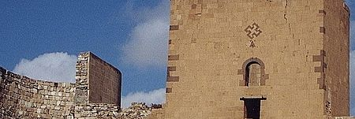

Толкование:
Аревахач


Два аревахача на одном из памятников.
Армянское Ваганьковское кладбище
5-лучевой аревахач показывает человека в стоячем состоянии с распростёртыми руками и ногами.
Во время движения человека, движение его правой ноги совпадает с движением левой руки, а движение левой ноги — с правой рукой.
Это природный закон, который управляет верхней оконечностью 5-конечного аревахача.
Кроме верхней оконечности правые и левые оконечности показывают движение энергетических потоков человек (не путать с семью центрами энергеии — чакрой).
5 лучей символизируют 5 способностей человека: слух, зрение, вкус, запах, осязание (остальные относятся к внутренней, духовной стороне). Они же олицетворяют количество пальцев на каждой руке и ноге человека. 5 лучей — это также пять частей света, заселённых людьми. Верхний луч пятиконечного аревахача принимает энергию символизирует космические волны. Если провести медиану от вершины пятиконечного аревахача, то можно получить ровно две части человека — правую и левую. Серединой линии является пуп.
Медиана 5-лучевого аревахача имеет пять углов. Эта медиана является лицом человека. Каждая часть внешнего анатомического строения человека заключается в этой форме.
6-лучевой аревахач на кресте,
Армянское Ваганьковское кладбище
8-лучевой аревахач на
карабахской медали
«Благодарность»
Хачкар во дворе церкви Нор Эчмиадзин, на котором изображён 9-лучевой символ вечности
Поесле принятия христианства в 301 году Великой Арменией, аревахач как один из главных символов язычества получил своё дальнейшее развитие в качестве христианского символа (таким же образом из «христианизировались» некоторые армянские языческие праздники, такие как Вардавар и Трндез, языческие имена и т. д.).
Аревахач, или армянский символ вечности стал неотъемлемой частью армянской христианской архитектуры. Его стали изображать на стенах церквей, монастырей. Аревахач стал неотъемлемой частью хачкаров — армянских камней-крестов.
Практически в каждом хачкаре можно найти различные вариации данного символа.
Аревахач как символ хетанизма
Сегодня аревахач является одним из символов армянского народа в целом.
Помимо прочего, его используют как основной символ последователи хетанизма — армянского неоязычества (см. также армянское язычество).